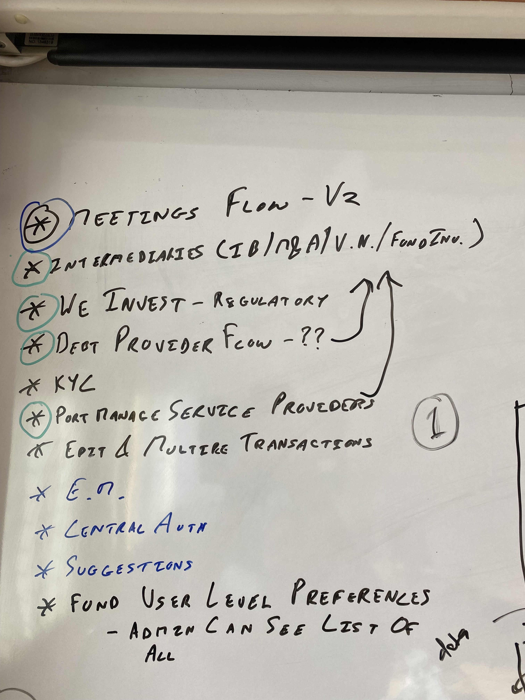
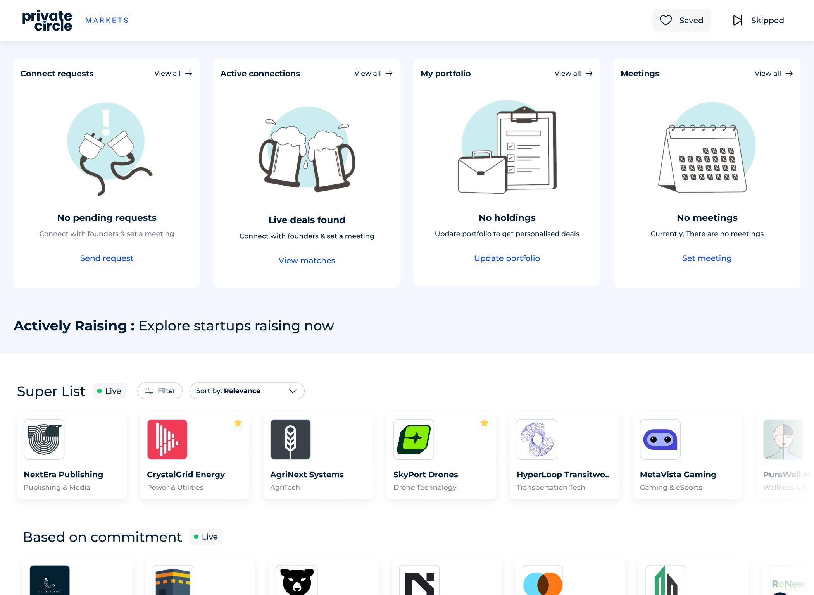
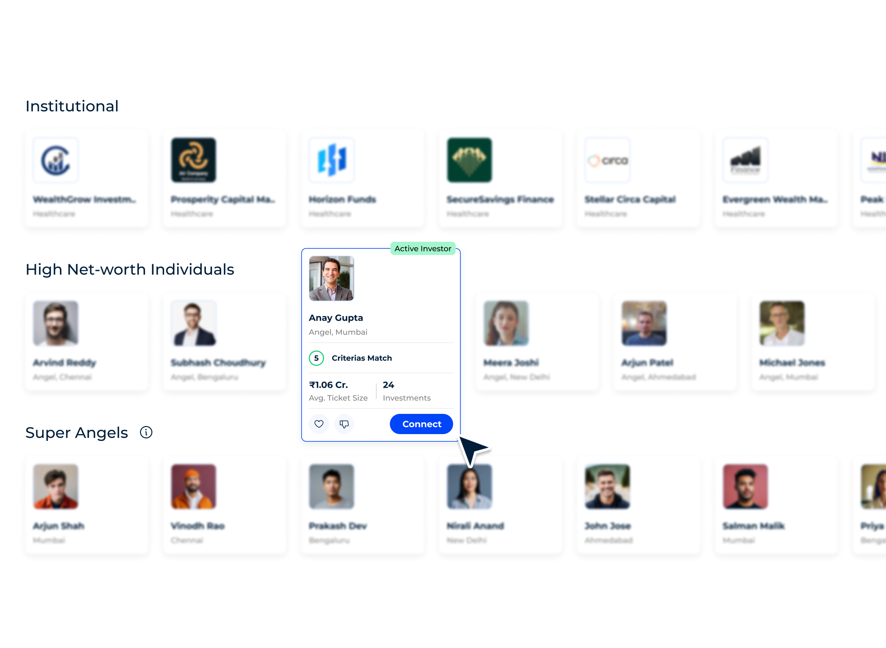
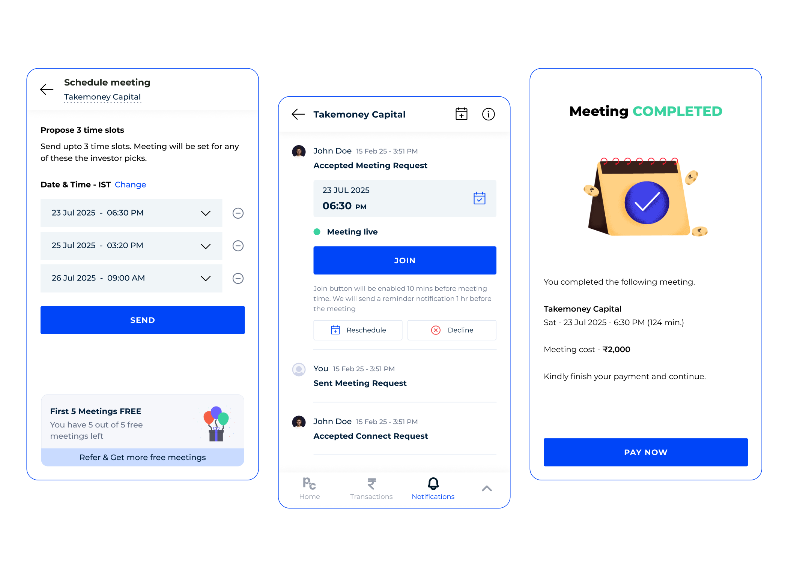
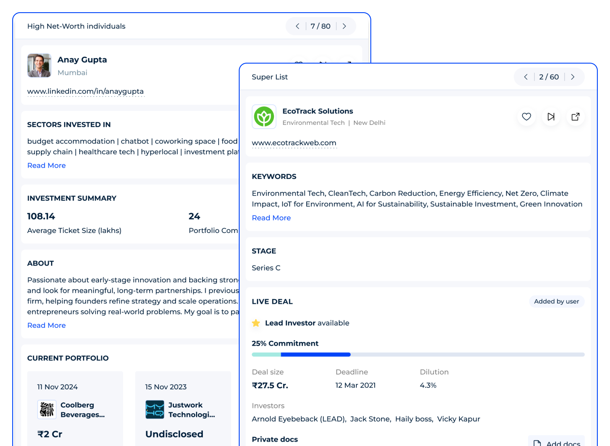

PrivateCircle Markets
AI-Powered Fundraising & Deal-Flow Marketplace
PrivateCircle Markets simplifies fundraising discovery and founder-investor matching through structured, audited corporate profiles and automated calendar schedules.

Overview
- Target Users
- High-Net-Worth Individuals (HNIs)
- Venture Capitalists & PE Directors
- Startup Founders & Capital Advisors
Business Context: Private equity and startup fundraising are notoriously fragmented. Relationships determine deal-flow, information is siloed, and manual paperwork delays critical timelines. Investors spend dozens of hours doing manual verification and searching through scattered company records.
Problem Statement: Startup founders struggle to target qualified investors who match their exact vertical and ticket criteria, while investors suffer from decision fatigue caused by unfiltered pitches and manual meeting coordination processes.
Objectives: To establish an end-to-end fundraising marketplace where founders present audited company profiles, while investors dynamically discover match suggestions and coordinate meetings directly in a central, trusted platform.
Role & Responsibilities
As the principal designer, I led the user experience and interface design from strategic positioning down to engineering handoff. I worked directly with product managers and developers to architect the database-matching layouts, user flows, and interaction patterns.
Brainstorming
Analyzing user pain points and mapping workflows. We aligned discovery lanes, matching logic, and slot coordination parameters.




Wireframes & Prototype
Visualizing grid cards and modular navigation layouts. Early wireframes focused on validating match rating alerts before high-fidelity visual production.

UX Challenges & Solutions
Helping investors quickly identify relevant companies
Investors had to read through multiple document attachments to compare sectors and commitment sizes.
Introduced progressive disclosure with interactive badges displaying match criteria statistics instantly on the list card.
Managing large amounts of financial information
Displaying capital allocations, cap tables, historical fund sizes, and sectors created high visual noise.
Created a tabbed system grouping Connect requests, active matches, and schedule logs in a unified view.
Before & After UI/UX

Before: Flat text rows showing static company listings. Users had to manually click into details to see matched parameters.

After: Unified layout with a popover showing criteria matching and direct Connect CTAs in one click.

Before: Bulky search inputs requiring precise query matches, leading to high friction and cognitive load.

After: Horizontal scroll lanes grouping categories (Super lists, AI-suggestions) and clear, structured cards.
Design Impact
Users transitioned from downloading offline company PDF reports to reading financial details directly online after the profile redesign.
The consolidated dashboard layout led to a measurable increase in active session time and exploration of matching parameters.
Improved search capabilities drove higher discovery rates, contributing directly to platform renewals and subscription retention.
Richer, easily navigable pages significantly improved discovery and referral traffic.
Final UI Gallery
Investor Dashboard: Houses active connection logs, portfolio tracking, and matching parameters.
Interactive Match popover: Shows detailed match checkmarks and connect CTAs.
Fundraising Lists: Segmented scroll lists for super lists and AI-driven suggestions.

Investor grid: Organized folders separating individual super angels and institutional venture funds.

Explore Network Feed: Interactive network visualization graph paired with live corporate news streams.

Mobile Responsive Dashboard: Visual stacks and custom bottom dock navigation shortcuts optimized for compact screens.

Automated Booking Flow: Unified time slot selection and calendar scheduling layout.
Final Outcome
PrivateCircle Markets evolved into a comprehensive private market ecosystem enabling founders and investors to discover opportunities, build connections, manage fundraising activities, and make informed investment decisions through structured data and intelligent workflows.